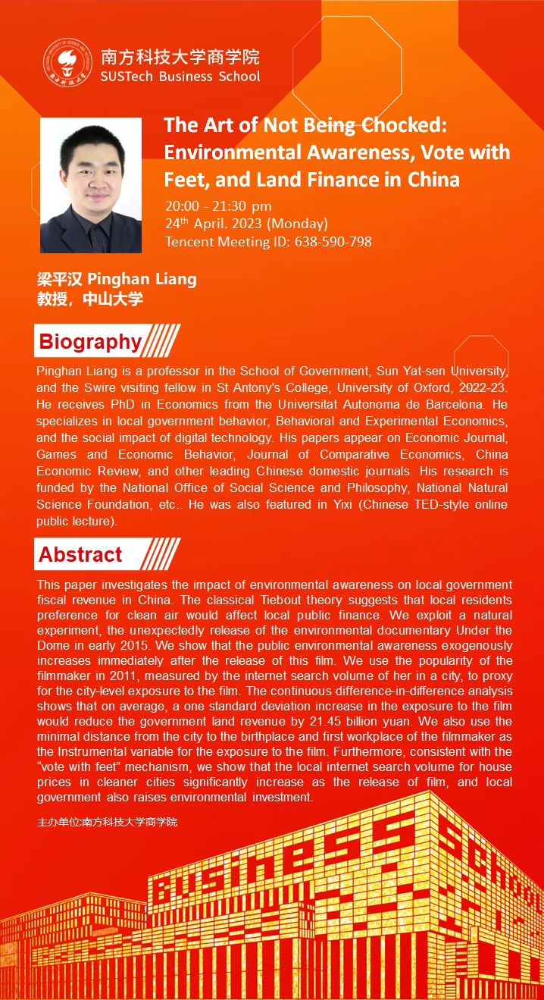
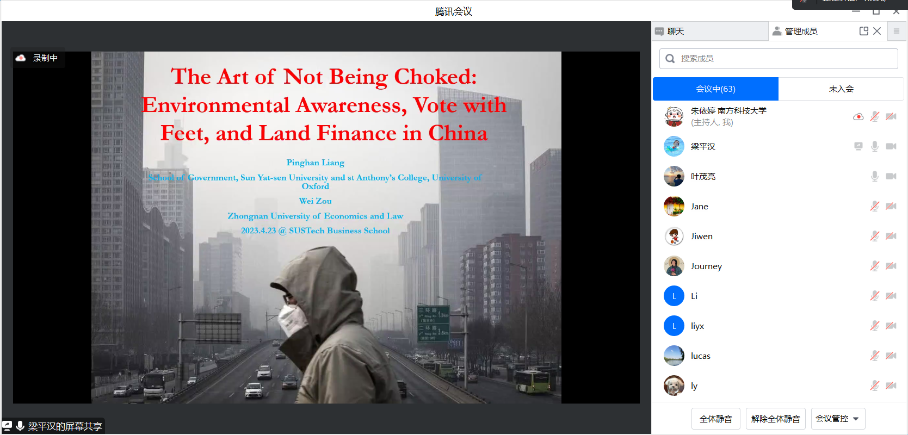

4月24日晚上，应南方科技大学应用经济学系（筹）和叶茂亮副教授的邀请，中山大学政治与公共事务管理学院梁平汉教授为南科大商学院及其他多所高校师生带来了一场精彩的线上学术讲座。讲座的题目是“The Art of Not Being Chocked: Environmental Awareness, Vote with Feet, and Land Finance in China”，主要介绍了他的最新研究成果，即环保意识对中国地方政府土地财政收入的影响。讲座由叶茂亮副教授主持。
梁平汉教授为中山大学政府学院教授，2022-23年度牛津大学圣安东尼学院Swire访问学者。他在巴塞罗那自治大学获得经济学博士学位。其研究领域包括地方政府行为、行为与实验经济学以及数字技术的社会影响。论文发表在Economic Journal, Games and Economic Behavior, Journal of Comparative Economics, China Economic Review，《经济研究》等国内外知名期刊上。他的研究得到了国家社会科学和哲学办公室、国家自然科学基金等机构的资助。他还曾在“一席”（中国TED式在线公开讲座）中亮相。
梁平汉教授在讲座中首先介绍了他的研究动机和背景。他指出，中国地方政府高度依赖土地财政，即通过出让土地使用权来获取财政收入。经典的Tiebout理论认为，当地居民对清洁空气的偏好会影响当地公共财政。如果空气污染严重地区的居民愿意为清洁空气迁徙到其他城市，那么地方政府就会面临人口流失和收入损失的压力，从而有动力改善环境质量。
这篇论文研究了环保意识对中国地方政府财政收入的影响。作者利用了一个自然实验，即2015年初环保纪录片《穹顶之下》的突然发布。这部电影发布后，公众对环境的意识立即外生性地增加。作者使用纪录片制片人在2011年的知名度，即她在某个城市的互联网搜索量，作为该城市市民接触该纪录片的代理变量。双重差分法分析表明，平均而言，纪录片曝光度增加一个标准差会使政府土地收入减少214.5亿元。作者还使用制片人出生地和第一工作地距离城市的最小距离作为接触该纪录片的工具变量。此外，与“用脚投票”机制一致，随着该纪录片的发布，各地对清洁城市房价的互联网搜索量显著增加，当地政府也增加了环境投资。
此次线上讲座持续90分钟，吸引了来自南方科技大学以及各兄弟院校的约一百位师生积极参加，并在讨论环节提问，梁教授都一一认真解答。

